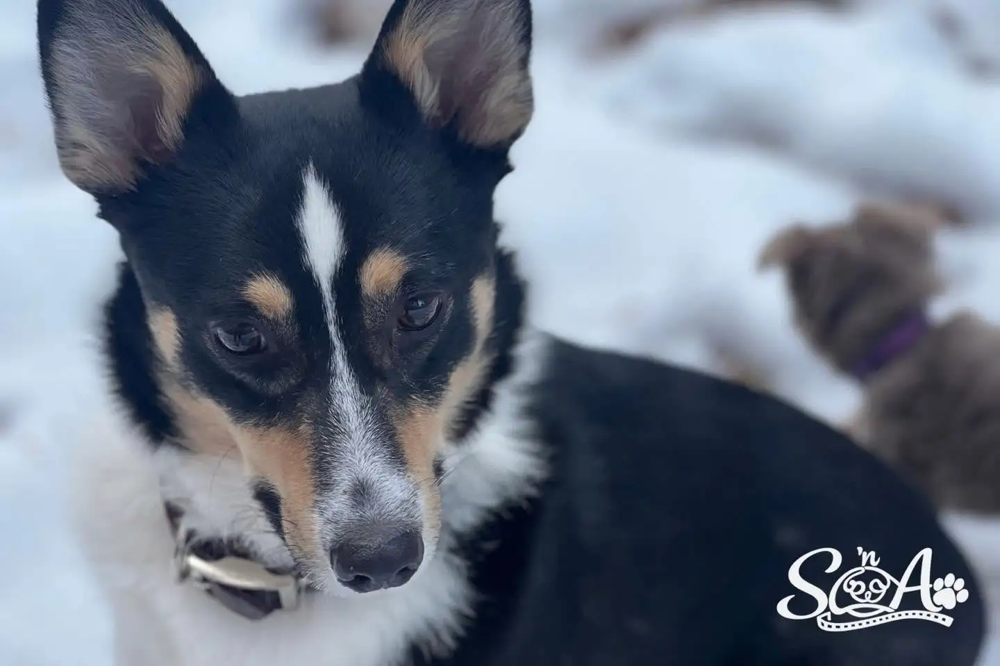
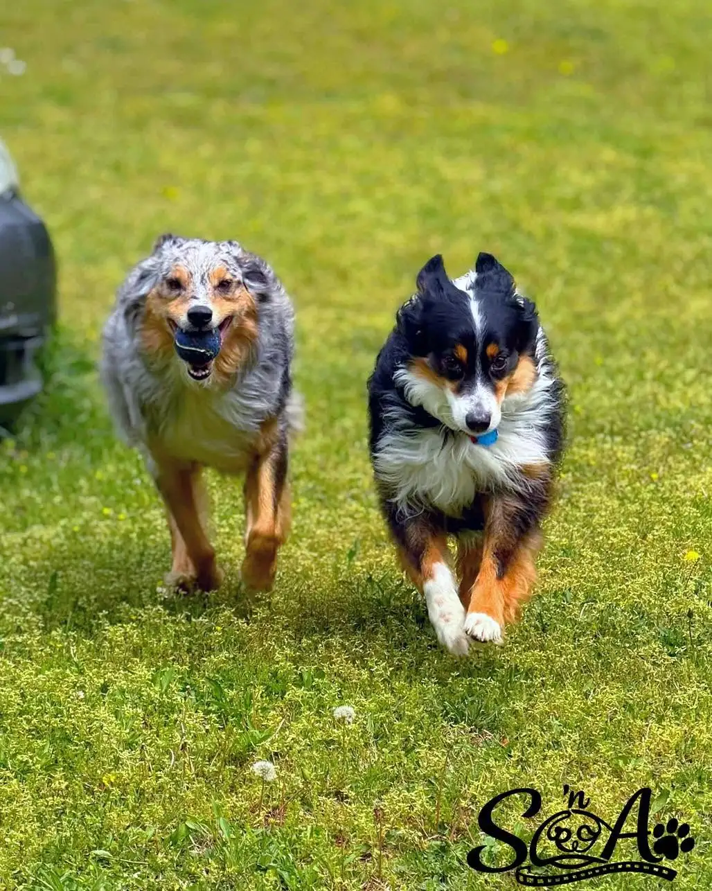
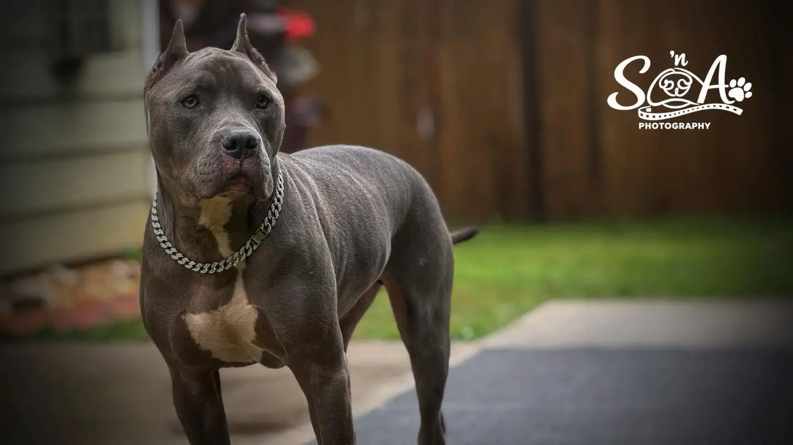
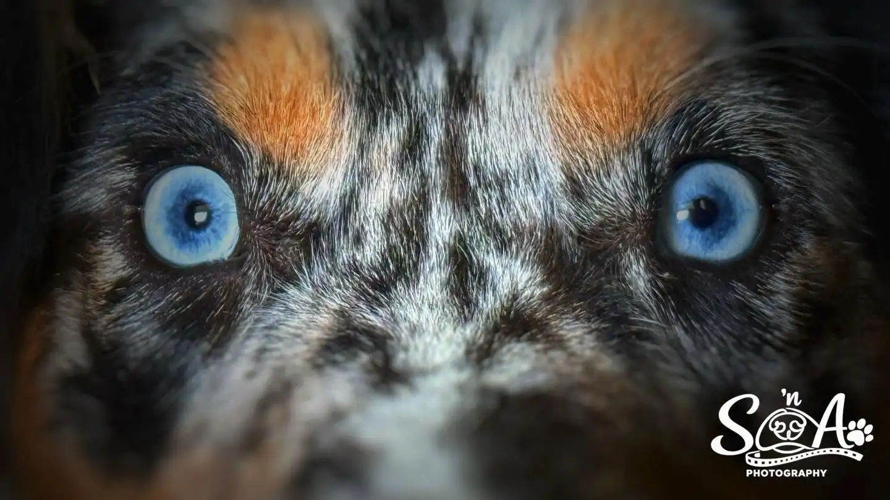
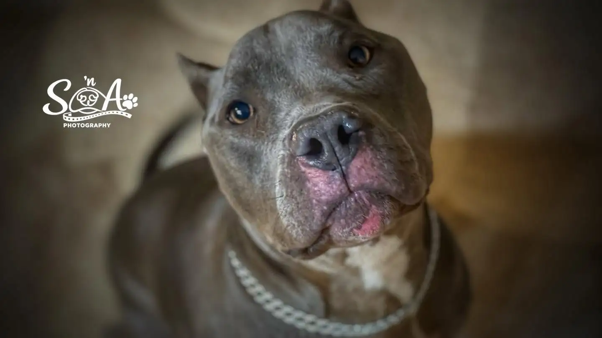
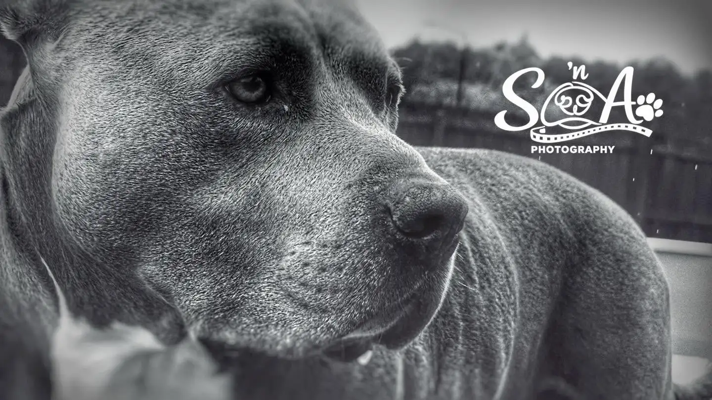
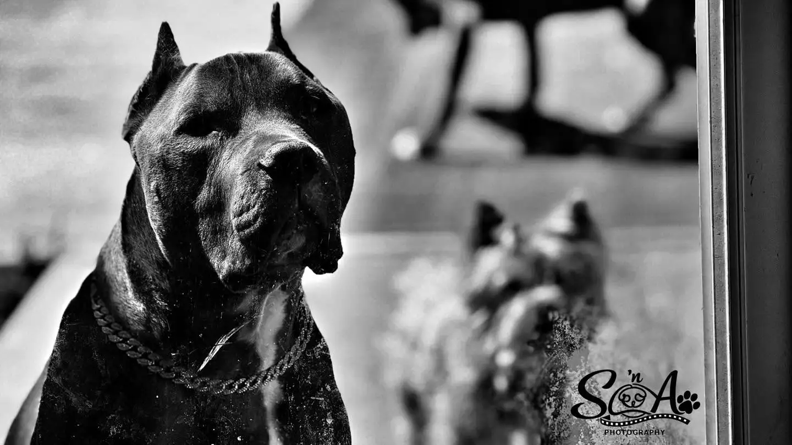
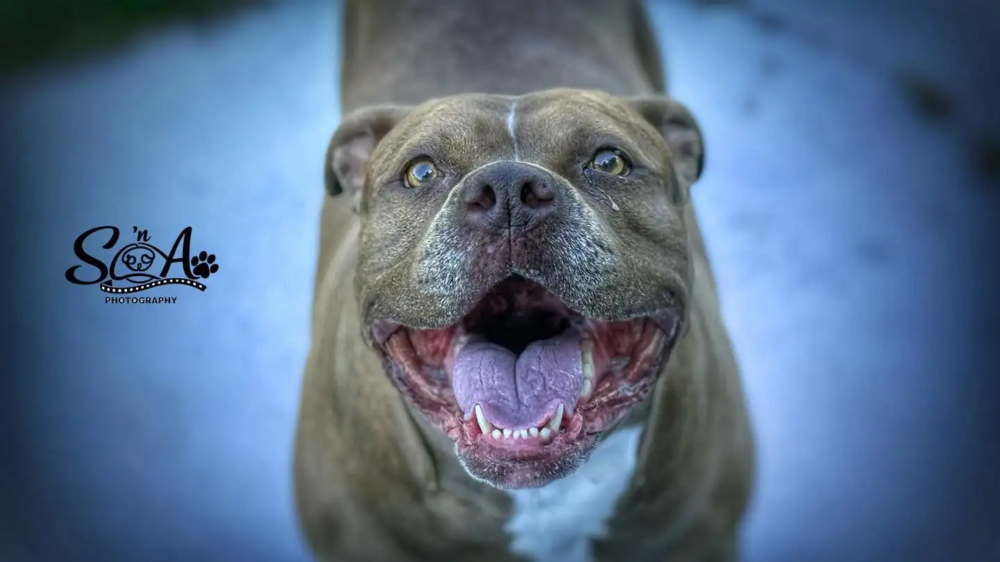
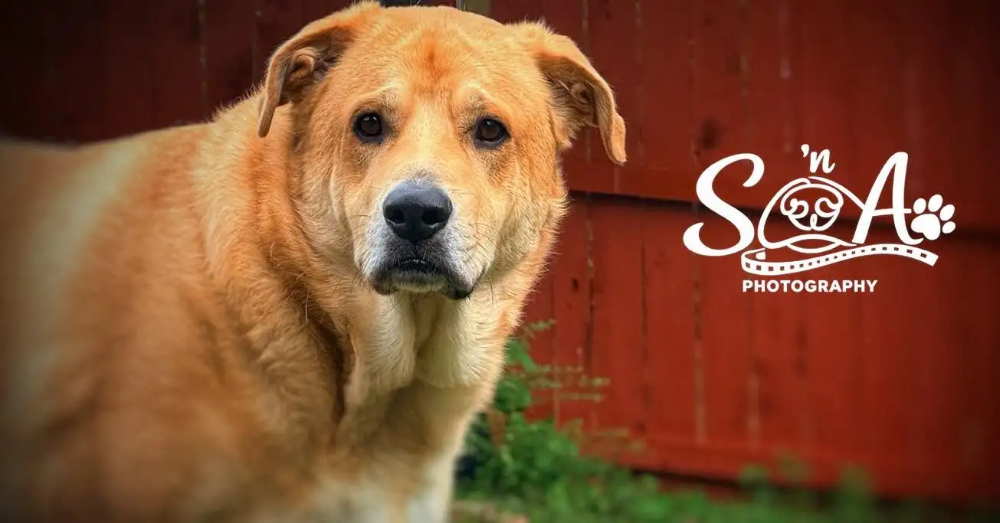
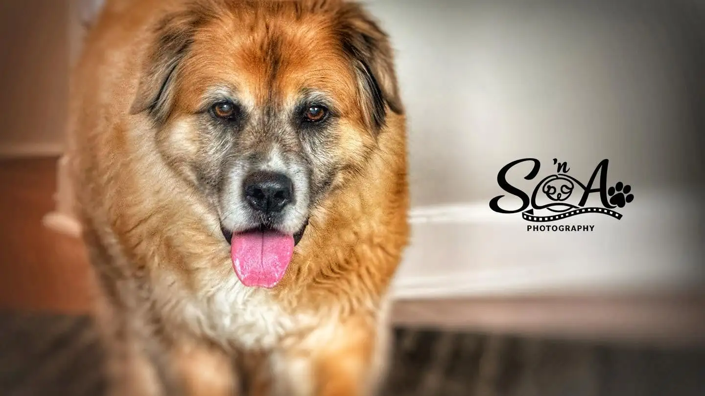

The portfolio
Big feeling. Four paws.
Expressive, soft, silly, and soulful. The photographs are the story.











The portfolio
Expressive, soft, silly, and soulful. The photographs are the story.









